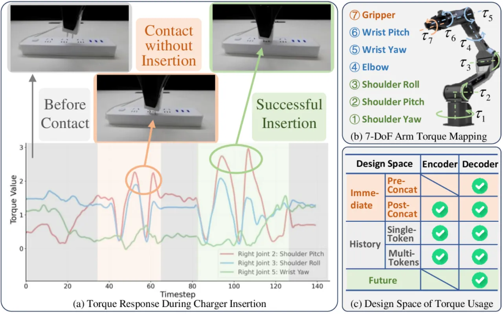
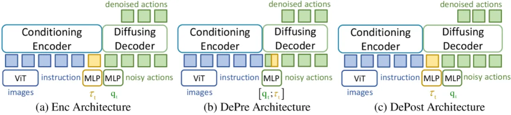
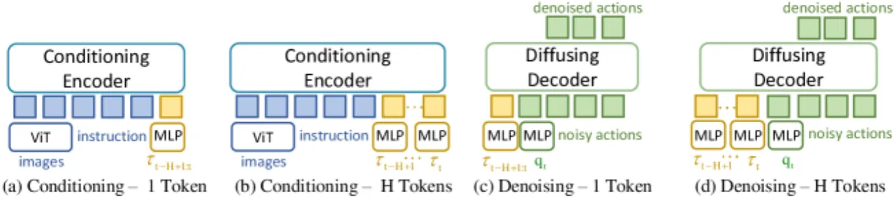
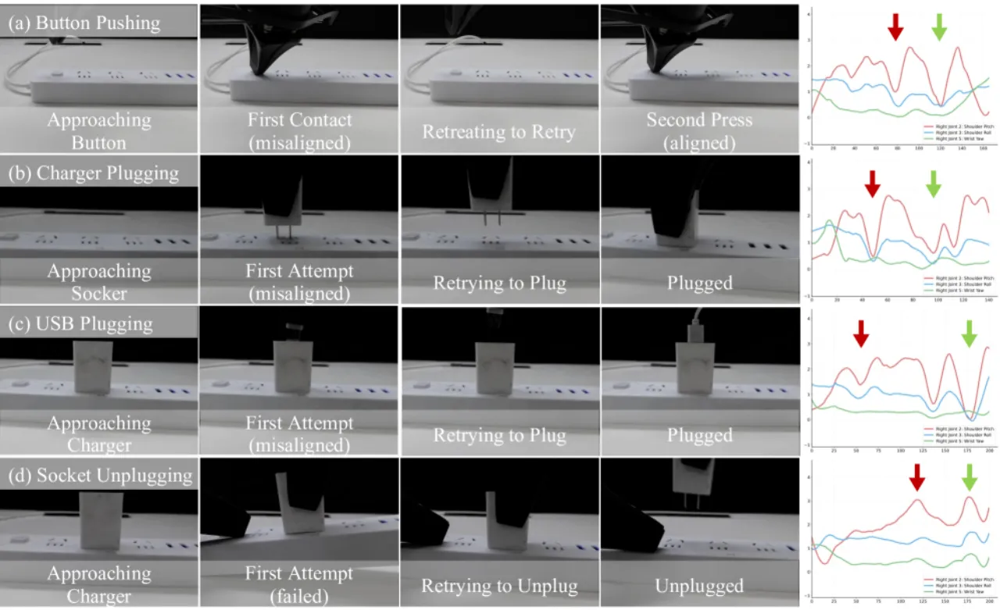
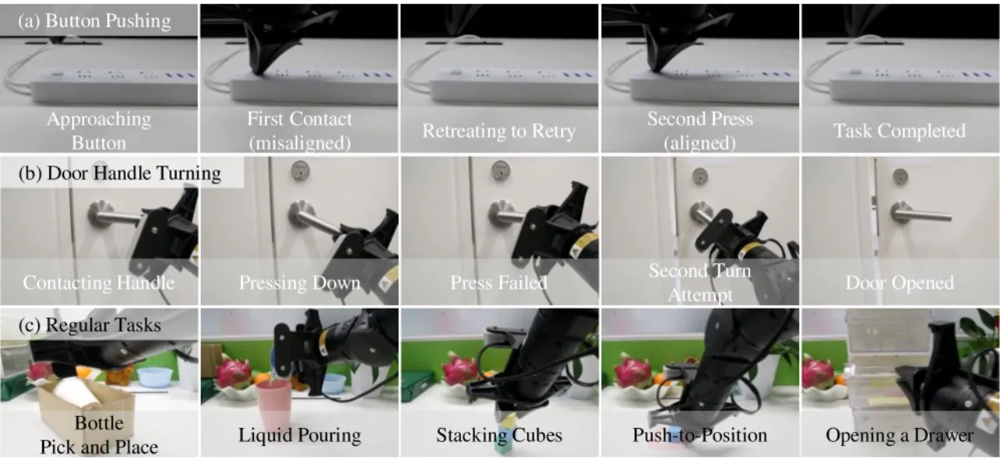

现有 VLA 模型只看图像与语言，缺乏对力反馈的感知，难以判断"插头到底插进去没有"这类接触密集任务。本文以 π0 为主体，系统性地搜索把 torque 注入 VLA 的设计空间，得到三条结论：力矩适配器应放在 decoder；历史力矩应聚合成 单个 token；把预测未来力矩当作 辅助目标 能进一步提升表现。
很多操作任务需要"感知并响应力信号"才能判断任务是否完成、才能做闭环控制。但当前 VLA 模型无法整合这类细微的物理反馈。关键洞察是：joint torque（关节力矩）无需外部力传感器，就能反映末端执行器接触动力学的细微变化——机械臂受到外部接触时，力沿整条运动链产生可观测的力矩变化。
"current Vision-Language-Action (VLA) models lack the ability to integrate such subtle physical feedback." —— 本文以此为出发点，系统性研究把 torque 接入 VLA 的设计空间。

大多数 VLA 由两部分组成：conditioning encoder（感知环境，把图像 I 与语言指令 L 融合成条件表征）和 denoising decoder（在低维本体状态 + 加噪动作块上逐步去噪，生成动作序列）。本文以 π0 为代表，沿三个问题展开设计空间搜索：力矩放哪、历史怎么编码、要不要预测未来。
把当前力矩 τt 用一个 adapter 编码成 token，可以拼进 encoder 的条件输入（Enc），也可以和本体状态 qt 一起送进 decoder（DePre / DePost 两种插入位置）。结论是 DePost（放在 decoder）最好——因为力矩信号与 decoder 的输入模式更对齐，且 decoder 对输入变化更敏感。作者还用 Normalized HSIC 度量各模态 token 与隐状态的统计相关性，佐证力矩与状态 token 高度对齐。

接触后语言与视觉几乎不变（视觉还常被遮挡），但力矩会剧烈变化，单帧力矩不足以刻画动态模式。作者从过去 2 秒均匀采样 10 帧力矩，比较两种编码：frame-wise（每帧一个 token，H Tokens） vs. aggregate（把全部历史拼成单个 140 维 token，1 Token）。结论是 把整段历史聚合进单个 token 最有效——因为它保留了 decoder 原有的输入模式（pattern completeness）；实验中在输入序列里插入额外随机噪声 token 会破坏这一模式并降低表现（Table 4）。

受自动驾驶中"联合预测与规划"范式启发，作者提出同时预测未来动作与未来力矩。把动作块 At ∈ ℝH×da 与力矩块 Tt ∈ ℝH×dτ 拼成联合 token Zt=[At; Tt]，共享同一套 diffusion 权重去噪，但保留各自的 loss（权重 β 平衡二者）。这个辅助任务促使模型建立"物理落地"的交互动力学隐表征，从而更可靠地完成接触密集操作。
"This strategy encourages the model to build a physically grounded internal representation of interaction dynamics."
硬件为 Cobot Magic ALOHA 双臂机器人（每臂 7-DoF，3 个 D435 深度相机），关节力矩由电机电流经 τ = kt·i 实时估计，无需外部力传感器。基线为 ACT、RDT、π0，均从公开预训练权重在自采数据上微调。共 10 个真机任务（5 个接触密集 + 5 个常规），每任务 20 次试验，每任务 400 条遥操作演示。三种变体：+obs（DePost 单 token 力矩观测）、+obj（联合动作-力矩目标）、+obs+obj（二者结合）。
| Method | Button Pushing | Charger Plugging | USB Plugging | Socket Unplugging | Door Handle Turning |
|---|---|---|---|---|---|
| ACT | 2 | 0 | 0 | 12 | 0 |
| RDT | 4 | 1 | 0 | 10 | 0 |
| π0 | 5 | 0 | 0 | 16 | 2 |
| π0 + obs | 15 | 16 | 15 | 19 | 13 |
| π0 + obj | 11 | 10 | 12 | 19 | 12 |
| π0 + obs + obj | 18 | 17 | 17 | 19 | 15 |
常规任务上力矩同样不掉分甚至略有提升——例如 Bottle Pick and Place 从 17 提到 19、Push-to-Position 从 16 提到 18（π0 → +obs+obj），说明力矩信号"即使在看似无关的任务上也有用"。
| Table 1 · 力矩放哪（/20） | π0 | Enc | DePre | DePost |
|---|---|---|---|---|
| Button Pushing | 5 | 7 | 8 | 10 |
| Charger Plugging | 0 | 8 | 11 | 12 |
| Table 3 · 历史编码（/20） | π0 | Enc-1 | Enc-H | Dec-1 | Dec-H |
|---|---|---|---|---|---|
| Button Pushing | 5 | 1 | 4 | 15 | 9 |
| Charger Plugging | 0 | 3 | 6 | 16 | 7 |
Table 1 印证"放 decoder（DePost）最优"；Table 3 印证"decoder + 单 token（Dec-1）最优"，明显优于把每帧拆成 token（Dec-H）或放进 encoder。
把同一套策略迁到 RDT：Button Pushing 4→16、Charger Plugging 1→15、Bottle Pick and Place 17→19（RDT → RDT+obs+obj），说明结论不局限于 π0。在 ROKAE SR 机械臂上做电动车充电头插入的跨本体实验（200 条演示、训练 50K 步），无需改架构即可从快充口迁移到慢充口。


力矩由内部电机电流估计而非外部力传感器，"can be affected by motor calibration, sensor noise, or thermal drift"，在长时间或高负载任务中可能退化性能。
力矩虽有效，但在 transformer 的共享 token 预算下，能否扩展到 tactile sensing、temperature 等更丰富的物理模态仍是未知数（"it remains unclear how scalable the framework is"）。
需进一步评估在更多样、更真实场景下的鲁棒性，并探索更丰富多模态信号的对齐与融合。